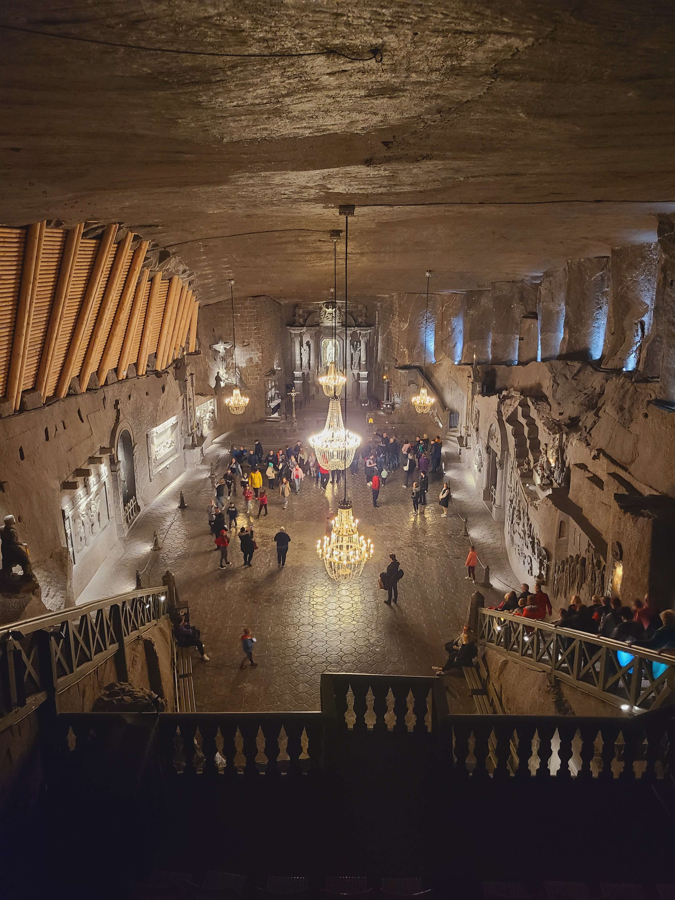

Trip
Family trip
Context
My family decided to visit me during the April holidays, we visited and spent time together in Warsaw and Krakow in one week.
I will tell you what we did to give you ideas if you want to go to Poland with your family or friends.
Visit in Warsaw
As I have written an article about my 3 day trip with a friend in Warsaw, before starting my Erasmus semester, I told you that we could only visit the Science and culture Palace’s point of view because the other monuments were closed due to USA’s and Ukraine’s President who were meeting in Warsaw to discuss about the war.
There was a lot of policemen in the city center and major parts of the monument were closed for avoiding crowd.
So, I took the opportunity that my family comes to Poland to visit the Royal Castle, some churches and have a walk in the old town and under the sun in Lazienki park without forgetting to eat some local food (again, but it is very tasty food).
The Royal castle was the best visit I did in Warsaw, it was a beautiful building, there were wealthy decorations in any rooms. The visit was also very well explained with audio guide in many languages.

A view of the Royal castle.
The royal polish throne.
A view inside the Royal castle.
The Lazienki park was a good place to go when the weather was sunny as it was when we were in Warsaw. We just have a walk and a seat on a bench under the trees. We also find the Chopin’s monuments.

Chopin’s monument statue.
Visit in Kraków
My family moved to spent time in the second most famous city of Poland: Kraków. They visited the old town, the Jewish district and Auschwitz the 3 first days when I went back to school. Then, I came back 3 days later to visit some monuments that I had not already visited. Effectively, as for my trip in Warsaw, I already visited Kraków before with ESN EYE and wrote an article about it.
Finally, we visited the old salt mine around Kraków with a guide (in English, but there are many other languages available). It was a very beautiful place because all the walls, floor and ceiling were made of salt, some artists created salt sculptures when some workers cut into the salt rock to build a cathedral inside the mine. Also, there were some representing scenes of mining salt during the last era when the mine was opened.

An outdoor view in front of the salt mine.
Sculpted dwarves by worker-artist in salt mine.

Cathedral inside the salt mine.
Sources: